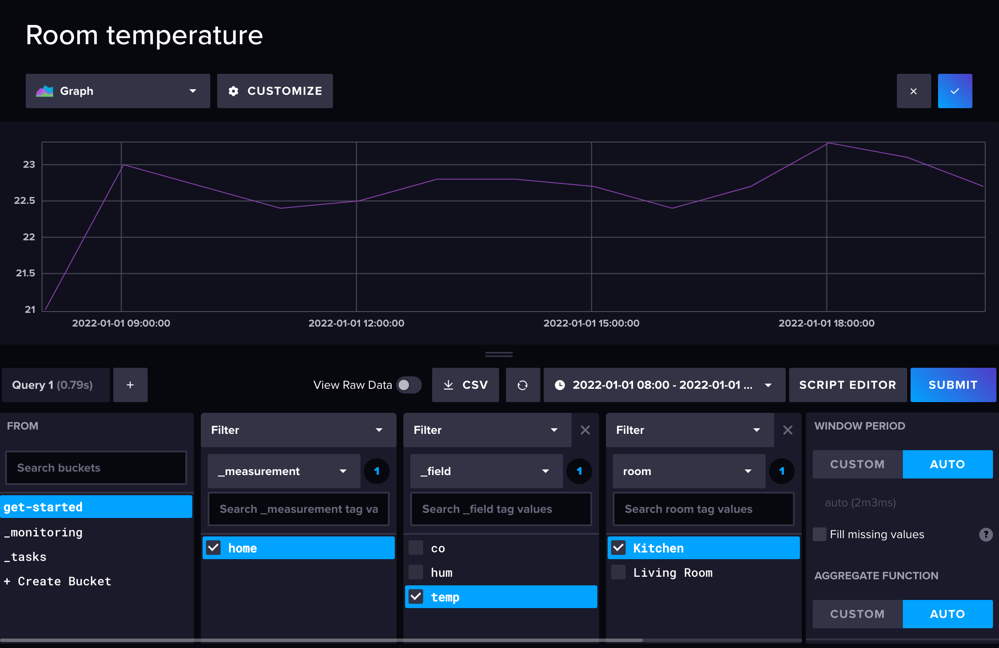
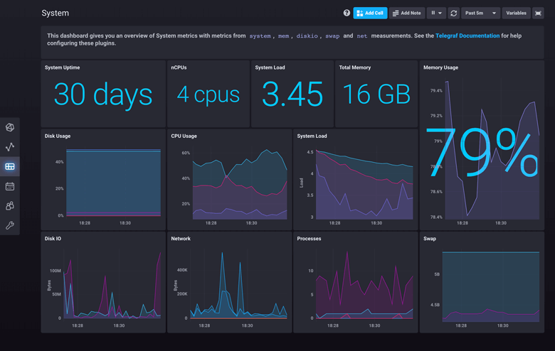

Influxdb
 项目首页
项目首页
influxdb是一个分布式的时序数据库，它使用Go语言编写的一个开源分布式时序、事件和指标数据库，无需外部依赖。类似的数据库有Elasticsearch、Graphite等。


 如何部署在线 Influxdb
如何部署在线 Influxdb
什么是 Influxdb
- InfluxDB是一款用Go语言编写的开源分布式时序、事件和指标数据库，无需外部依赖。该数据库现在主要用于存储涉及大量的时间戳数据，如DevOps监控数据，APP metrics, loT传感器数据和实时分析数据。
功能列表
- 高性能：InfluxDB支持高并发写入，适用于处理实时数据流。
- 数据压缩：采用自适应压缩算法，有效减少存储空间。
- 低查询延时：提供丰富的查询功能，支持类似SQL的查询语言（InfluxQL）。
- 高可用性：支持数据复制和故障转移，确保数据的安全和系统的稳定性。
- 插件生态系统：拥有丰富的插件生态系统，可以扩展其功能